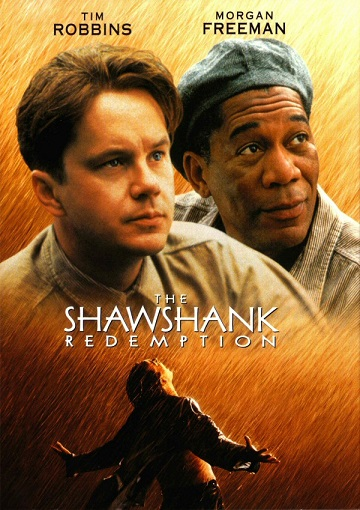
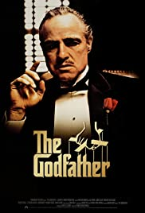
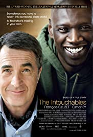

- By watching movies we can meet new stories, it brings new and existing
emotions and experiences. You can forget about your problems for some
time and fall into another world.
- I like movies and series of genre like comedy, drama, thriller, and romance.
I like those films where I can learn and understand something new and useful.
One more thing I like is to discuss certain parts of the film with friends after
watching it. Below I will list my top 3 favorite movies and series with a short
description. Enjoy watching!
1.The Shawshank Redemption
 Film-drama was directed by Frank Darabont based on the novel by Stephen King. Do not
watch this movie once, you are committing a crime against the world of cinema. This tape
is deservedly called the great or even the greatest. Despite the fact that the film failed
at the box office originally, now this film is in the forefront of the top rating of the
best film in the world. Generally it is very difficult to find the right words to describe
this film, and it aptly describes it. So start watching immediately and you will not regret
the time spent!
The plot of the film "The Shawshank Redemption": vice-president of the bank Dyufreyn
Andy was sentenced to two life sentences for the murders that he had not accomplished.
For the death of his wife and her lover guy soldered thirty years of a life sentence.
Disagreeing with his fate, Andy for many years preparing a plan to escape. During the time
that the main character arrived in prison, hebr managed to earn credibility, respect and
trust of both prisoners and prison authorities. At the same time Andy helped authorities
make large sums of money. The protagonist would have thought that when the actress, who
madly like he has no idea of its existence, to save his life...
| Release Date | 1994 |
|---|---|
| Country | USA |
| Genre | Drama, crime |
| Duration | 142 minutes |
2.The Godfather
 The Godfather "Don" Vito Corleone is the head of the Corleone mafia family in New York.
He is at the event of his daughter's wedding. Michael, Vito's youngest son and a decorated
WW II Marine is also present at the wedding. Michael seems to be uninterested in being a part
of the family business. Vito is a powerful man, and is kind to all those who give him respect
but is ruthless against those who do not. But when a powerful and treacherous rival wants to
sell drugs and needs the Don's influence for the same, Vito refuses to do it. What follows is
a clash between Vito's fading old values and the new ways which may cause Michael to do the
thing he was most reluctant in doing and wage a mob war against all the other mafia families
which could tear the Corleone family apart.
I also recomend you to watch other parts:
| Release Date | 1972 |
|---|---|
| Country | USA |
| Genre | Drama, crime |
| Duration | 175 minutes |
3.Intouchables
 In Paris, the aristocratic and intellectual Philippe is a quadriplegic millionaire who
is interviewing candidates for the position of his carer, with his red-haired secretary
Magalie. Out of the blue, Driss cuts the line of candidates and brings a document from
the Social Security and asks Phillipe to sign it to prove that he is seeking a job position
so he can receive his unemployment benefit. Philippe challenges Driss, offering him a
trial period of one month to gain experience helping him. Then Driss can decide
whether he would like to stay with him or not. Driss accepts the challenge and moves
to the mansion, changing the boring life of Phillipe and his employees.
| Release Date | 2012 |
|---|---|
| Country | France |
| Genre | Drama, crime |
| Duration | 112 minutes |
If you want to recommend you some movies or series, you can fill this form: